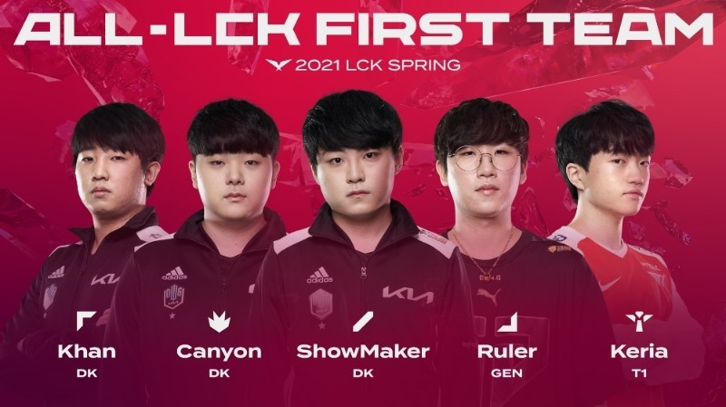

◑원래 Showtime으로 하려다가 이미 있길래 쇼를 가지고 만들 수 있는
닉네임이 뭐일지 생각하다가 결정했다고 한다.
◑본래 공무원이 될 생각이었으나 피파 버닝 이벤트를 위해
학원 땡땡이를 치다가 걸린 후, 가출하면서 공부를 접었다고 한다.
◑관계자들 사이에서 인성이나 성격이 좋기로 소문이 자자한데,
그 예로 양대인 전 코치가 쇼메이커를 처음 만난 날 혼자서 다 먹은
야식 쓰레기를 치우는 모습을 보고 감동했다고 한다.
◑가수 선미가 쇼메이커의 유니폼을 입고 찍은 셀카를 인스타에 올려 화제를 불러 모았다.
◑현재 흔들리는 담원기아에서 묵묵히 제 몫을 해주고 있다.

